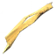
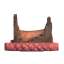

Fische & Sonstiges
Fische & Sonstiges in Valheim – 33 Gegenstände mit Biom, Fundort, benötigtem Werkzeug, Rezept und Verwendung.
Kein Gegenstand gefunden.
 Asksvin-Sattel
Asksvin-Sattel
Der Rücken eines Asksvin ist ziemlich uneben, weshalb man zum Reiten einen Sattel braucht.
Herkunft
- Herstellen: Schwarzschmiede (Stufe 2) aus 6 ×
 Flammenkern, 20 ×
Flammenkern, 20 ×  Leinenzwirn, 4 ×
Leinenzwirn, 4 × 
Morgensehne
 Barbier-Rüstzeug
Barbier-Rüstzeug
Ausrüstung, eines Meisterbarbiers würdig.
Herkunft
- Kaufen: Hildir · 600 Münzen
Verwendung
- Baumaterial für: Barbierstelle
 Barsch
Barsch
Ein leckerer heller Fisch.
Herkunft
- Angeln: Grasland, Düsterwald, Ebenen · Köder: Angelköder
Verwendung
- Zutat für: Fischerhut, Metmischung: Vananidr, Roher Fisch
 Drachenei
Drachenei
Sieht wesentlich schwerer aus, als es ist. Aus dem Innern ist ein schwaches Summen zu vernehmen.
Herkunft
- Aufsammeln: Drachennest (Ei)
 Drachenträne
Drachenträne
Die letzten gefrorenen Tränen eines Drachen. Pulsieren mit mysteriöser Energie.
Herkunft
- Beute von: Moder · Gebirge · 10 ×
Verwendung
- Baumaterial für: Handwerkstisch
 Ei
Ei
Halt es warm und warte ab, was herauskommt … Aber was war nun zuerst da?
Herkunft
- Kaufen: Haldor · 1.500 Münzen · nach dem Sieg über: Yagluth
- Truhen: Hildir-Quest: Versiegelter Turm · 55 % Chance
Verwendung
- Zutat für: Gekochtes Ei, Pfannkuchen, Pilzomelett, Ungebackenes Süßbrot
 Elchsattel
Elchsattel
Elche sind edle Kreaturen, aber mit einem Sattel lassen sie sich vielleicht reiten.
Herkunft
- Herstellen: Schwarzschmiede (Stufe 2) aus 4 ×
 Blutgold, 5 ×
Blutgold, 5 ×  Robbenpelz, 5 ×
Robbenpelz, 5 ×  Zimmerholz, 15 × Leinenzwirn
Zimmerholz, 15 × Leinenzwirn
 Fassreifen
Fassreifen
Perfekte, runde Metallringe zum Zusammenhalten von Fässern. Es fehlt nur noch das Holz!
Herkunft
- Kaufen: Haldor · 100 Münzen (× 3)
Verwendung
- Baumaterial für: Fass
 Fuling-Totem
Fuling-Totem
Kanalisiert die uralten Kräfte Yagluths.
Herkunft
- Beute von: Fuling Berserker · Ebenen · 10 % Chance
- Truhen: Stonehenge · 8,1 % Chance
- Aufsammeln: Steinturm (Berge), Fuling-Dorf
Verwendung
- Beschwört den Boss: Yagluth (3 ×)
 Gerstenmehl
Gerstenmehl
Gut geeignet, um Brot zu backen.
Herkunft
- Verarbeiten: Windmühle aus
 Gerste
Gerste
Verwendung
 Glocke
Glocke
Für wen hat die Stunde geschlagen?
Herkunft
- Herstellen: Schwarzschmiede aus 3 ×
 Glockenfragment
Glockenfragment
Verwendung
- Beschwört den Boss: Fader (3 ×)
 Hafermehl
Hafermehl
Fein gemahlener Hafer mit einer Menge Potenzial.
Herkunft
- Verarbeiten: Windmühle aus
 Hafer
Hafer
Verwendung
 Hecht
Hecht
Ein Süßwasserfisch, der gut gewürzt werden muss.
Herkunft
- Angeln: Grasland, Düsterwald, Ebenen · Köder: Angelköder
Verwendung
- Zutat für: Fischerhut, Roher Fisch
 Hildirs Messingtruhe
Hildirs Messingtruhe
Eigentum von Hildir, im Falle eines Fundes bitte zurückgeben.
Herkunft
- Beute von: Brenna · Düsterwald
 Hildirs Silbertruhe
Hildirs Silbertruhe
Eigentum von Hildir, im Falle eines Fundes bitte zurückgeben.
Herkunft
- Beute von: Geirrhafa · Gebirge
 Korallenbarsch
Korallenbarsch
Er hat Dinge gesehen … sehr verstörende Dinge …
Herkunft
- Angeln: Ozean · Köder: Stinkender Angelköder
Verwendung
- Zutat für: Fischerhut, Roher Fisch
 Kugelfisch
Kugelfisch
Schmeckt, wenn richtig zubereitet, aber der Geschmack hinterlässt ein Brennen.
Herkunft
- Angeln: Nebellande, Ozean · Köder: Nebel-Angelköder
Verwendung
- Zutat für: Fischerhut, Roher Fisch

Lox-SattelMit einem Lox kombinieren, um ihn zu reiten.
Herkunft
- Herstellen: Werkbank aus 10 ×
 Lederreste, 20 × Leinenzwirn, 15 ×
Lederreste, 20 × Leinenzwirn, 15 ×  Schwarzmetall
Schwarzmetall
 Magmafisch
Magmafisch
Es heißt, dieser Fisch legt seine Eier direkt in Lava!
Herkunft
- Angeln: Aschenlande · Köder: Heißer Angelköder
Verwendung
- Zutat für: Fischerhut, Roher Fisch
 Nordlachs
Nordlachs
Dieser Fisch bevorzugt nahezu eiskaltes Wasser.
Herkunft
- Angeln: Hoher Norden · Köder: Frostiger Angelköder
Verwendung
- Zutat für: Fischerhut, Roher Fisch
 Riesenhering
Riesenhering
Fermentiert riecht dieser Fisch noch schlimmer als der Sumpf, dem er entstammt.
Herkunft
- Angeln: Sumpfland · Köder: Klebriger Angelköder
Verwendung
- Zutat für: Fischerhut, Roher Fisch
 Salmler
Salmler
Da er sein ganzes Leben im Dunkeln verbringt, braucht er keine Augen.
Herkunft
- Angeln: Gebirge · Hildir-Quest: Heulende Höhle, Frosthöhle · Köder: Kalter Angelköder
Verwendung
- Zutat für: Fischerhut, Roher Fisch
 Seeteufel
Seeteufel
Durch das baumelnde Licht kann man das kleine hübsche Gesicht besser sehen!
Herkunft
- Angeln: Nebellande · Köder: Nebel-Angelköder
Verwendung
- Zutat für: Fisch und Brot, ungekocht, Fischerhut, Roher Fisch
 Sensengriff
Sensengriff
Stabile Basis für ein Werkzeug.
Herkunft
- Kaufen: Die Sumpfhexe · 200 Münzen · nach dem Sieg über: Moder
Verwendung
- Zutat für: Sense
 Siegelbrecher
Siegelbrecher
Ein Objekt zum Aufbrechen von Dvergr-Siegeln.
Herkunft
- Herstellen: Galdr-Tisch aus 9 ×
 Siegelbrecherfragment
Siegelbrecherfragment
 Sumpfiger Schlüssel
Sumpfiger Schlüssel
Teilweise von verkrustetem Schlamm bedeckt. Übelriechend.
Herkunft
- Beute von: Der Uralte · Düsterwald
 Thunfisch
Thunfisch
Das Huhn des Meeres …
Herkunft
- Angeln: Ozean · Köder: Stinkender Angelköder
Verwendung
- Zutat für: Fischerhut, Roher Fisch
 Trollfisch
Trollfisch
Dieser Fisch ist eine Plage für die hiesigen Flüsse.
Herkunft
- Angeln: Düsterwald · Köder: Moosiger Fischköder
Verwendung
- Zutat für: Fischerhut, Metmischung: Trollstärke, Roher Fisch
 Uralter Samen
Uralter Samen
An das Ohr gehalten, hört man sehr leise Flüstertöne...
Herkunft
- Beute von: Grauzwergen Berserker · Düsterwald · 33 % Chance
- Zerschlagen: Grauzwerg-Nest
Verwendung
- Zutat für: Herz des Waldes
- Beschwört den Boss: Der Uralte (3 ×)
 Verschnörkelter Schlüssel
Verschnörkelter Schlüssel
Wenn es einen Schlüssel gibt, muss es auch ein Schloss dafür geben.
Herkunft
- Beute von: Hexen · Grasland, Düsterwald, Sumpfland, Gebirge, Ebenen, Nebellande, Aschenlande, Hoher Norden, Ozean · 10 % Chance
- Garen: Frost-Gießerei aus
 Guss: Verschnörkelter Schlüssel
Guss: Verschnörkelter Schlüssel
 Vulkangeier-Ei
Vulkangeier-Ei
Fühlt sich warm an und steckt voller Proteine.
Herkunft
- Beute von: Vulkangeier · Aschenlande · 1–2 × · 50 % Chance
- Aufsammeln: Geiernest
Verwendung
- Zutat für: Ungekochte Krustenpastete
 Zackenbarsch
Zackenbarsch
Am besten mit einer Menge Kohlenhydraten serviert!
Herkunft
- Angeln: Ebenen · Köder: Brennender Angelköder
Verwendung
- Zutat für: Fischerhut, Metmischung: Todeskito-Abwehr, Roher Fisch
 Zwiespältiger Geist
Zwiespältiger Geist
Die Überreste von Yagluth, einem Geist, der zwischen dieser Welt und der nächsten hin- und hergerissen ist.
Herkunft
- Beute von: Yagluth · Ebenen · 3 ×
Verwendung
- Baumaterial für: Irrlichter-Brunnen